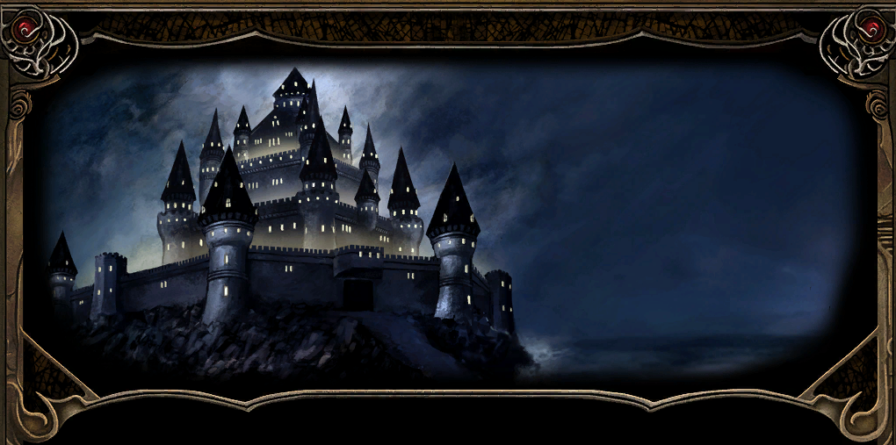

Co za dzień!
Usytuowana na klifach wznoszących się z Wybrzeża Mieczy, cytadela Candlekeep mieści najwspanialszą i najbardziej wszechstronną kolekcję pism na obliczu Faerûnu. Jest to imponująca forteca, utrzymywana w ścisłej izolacji od intryg, które od czasu do czasu nękają resztę Zapomnianych Krain. Jest odosobniona, ściśle uregulowana i jest domem Leecha. Pod opieką mędrca Goriona, wewnątrz uświęconych sal wiedzy nasz bohater spędził większość swoich dwudziestu lat życia. Gorion jak przybrany ojciec, wychował naszego bohatera na tysiącu opowieści o bohaterach i potworach, kochankach i niewiernych, bitwach i tragediach. Jednak jedna historia zawsze pozostawała nieopowiedziana: historia prawdziwego dziedzictwa Leecha. Był sierotą, ale jego przeszłość jest w dużej mierze nieznana. Ostatnio Gorion stawał się coraz bardziej zdystansowany, jakby jakaś poważna sprawa ciążyła mu na sercu. Jedyną pociechą jest wiedza, że jest mądrym człowiekiem i podzieli się troskami, gdy nadejdzie czas. Niemniej jednak, jego milczenie jest niepokojące i nie można się oprzeć wrażeniu, że dzieje się coś strasznie złego...

{kind=link}
Dzisiaj rano Gorion wydaje się bardziej wzburzony niż kiedykolwiek, a teraz w nietypowy dla siebie sposób przerwał rutynę Leecha w środku dnia przekazując mu pośpieszne instrukcje, aby wyposażył się do podróży i wręczył mu trochę złota bez żadnej wskazówki i powodu tej nagłej wyprawy. Nasz bohater jest właśnie przy Gospodzie w Candlekeep i tak zaczyna się ta opowieść 1.
Leech znał tę gospodę jak własną kieszeń i od dawna urywał się tam na piwo lub dwa. Z tym miejscem wiązało się też niemało przelotnych romansów, a sam nierzadko stawał się zdobyczą mniej lub bardziej dojrzałych niewiast. Tym bardziej jego uwagę przykuła Linda, która właśnie wróciła do miasteczka po serii niezwykłych przygód.
Okazało się, że jej narzeczony, Sir Trun, stracił rękę, gdy grupa potworów wyłoniła się z magicznego portalu i próbowała wciągnąć go do środka. Wówczas ślicznotka zareagowała w jedyny rozsądny sposób. Chwyciła miecz ukochanego i jednym cięciem odrąbała mu rękę, ratując go przed losem zapewne gorszym od kalectwa. Niestety jej oblubieniec nie potrafił pogodzić się z niespodziewaną rycerskością swojej wybranki. Zamknął się w sobie i przebywał teraz w miejscowym szpitalu. Linda była zrozpaczona i obawiała się, że już nigdy nie odzyska jego względów. Leech uznał, że warto porozmawiać z ofiarą tego ataku i uzmysłowić mu, jaki skarb ma u swego boku (LINDA AND SIR TRUN).
Dziwny to dzień, gdyż w gospodzie pojawił się kolejny przybysz. Firebead Elvenhair zdawał się znać Leecha i poprosił go o przyniesienie zwoju identyfikacji od Tethornila. Wspomniał także o jakimś „żelaznym kryzysie”, przez który jego podróż z Beregostu okazała się znacznie bardziej ryzykowna niż zwykle (FIREBEAD'S SCROLL).
W izbie przy kominku podróżny o imieniu Thurston oraz jego małżonka narzekali na chłodne przyjęcie ze strony tutejszych mnichów. Na piętrze Leech spotkał Quincy'a i Christiana. Żaden z nich nie okazał się szczególnie rozmowny, choć ten drugi mimochodem wspomniał, że pochodzi z Waterdeep.
Właściciel gospody Winthrop, jak zwykle uśmiechnięty, serdeczny i pełen żartów, powiedział, że jakaś młoda uzdrowicielka, o ile dobrze pamiętał imieniem Sanna, poszukiwała Leecha i pozostawiła dla niego piękny miecz o nazwie „Podarunek Mystry”.
Po załatwieniu wszystkich spraw chłopak wyposażył się w skórzaną zbroję oraz zapas bełtów. Kilka piw dodatkowo rozwiązało język karczmarzowi. Dzięki temu dowiedział się, że od kilku miesięcy żelazo w całym regionie zaczęło się psuć, jak gdyby rdzewiało bez żadnej widocznej przyczyny. Większość wadliwego surowca pochodziła podobno z kopalń w Nashkel, gdzie wydarzyło się coś złowieszczego. Krążyły pogłoski, że jakaś nieznana siła morduje tamtejszych górników.
Z karczmy skierował się do koszar 2, gdzie przekazał Fullerowi bełty, które szczęśliwie miał już w swoim ekwipunku (AN ERRAND FOR FULLER). Żołnierz wspomniał również o swoim kamracie Hullu, który po nocnej popijawie stał przy bramie i cierpiał z powodu jej przykrych następstw. Być może on także będzie miał dla Leecha jakieś zlecenie.
W kwaterach żołnierzy 3 napadł na niego Carbos. Niedoszły zabójca przyznał, że otrzymał zlecenie na uciszenie go, nie zdążył jednak wyjawić nazwiska swojego mocodawcy, gdyż wkrótce sam przestał oddychać. Na zawsze.
Po wyjściu z budynku Leech natknął się na jednego ze swoich nauczycieli, Karana, którego zainteresował hałas dobiegający z koszar. Gdy usłyszał o próbie zabójstwa, wyraźnie zaniepokojony ponaglił wychowanka, aby jak najszybciej spotkał się z Gorionem. Cała sprawa zaczynała wyglądać coraz groźniej. O co tu chodziło? Dlaczego ktoś pragnął śmierci młokosa?
Kawałek dalej Gatewarden 4, mistrz fechtunku, zaproponował ostatni sparing przed podróżą. Podobno sam Gorion prosił go o przeprowadzenie tego treningu. Nadal nie rozumiał, co się wokół niego dzieje. Po kilku piwach i walce, z której ledwie uszedł z życiem, nie miał większej ochoty na bezcelowe tępienie miecza, lecz mimo wszystko nie zamierzał odmówić. Iluzjonista Obe przygotował dla niego znacznie bardziej wymagające ćwiczenie. Wyczarował bandę Xvartów, z którą Leech wraz z towarzyszami szybko się rozprawił.
Następnie nasz bohater skierował kroki do infirmerii 5, aby porozmawiać z Sir Trunem a przebywający tam kapłan Oghmy podarował mu miksturę leczniczą, która z pewnością może przydać się podczas nadchodzącej podróży.
W rozmowie okaleczony szlachcic przyznał, że nie potrafił pogodzić się z myślą, iż jego narzeczona okazała się urodzoną wojowniczką. Nie wiedział, jak powinien zachować się wobec kobiety, która uratowała mu życie, lecz przy okazji dowiodła, że posiada więcej odwagi i zdecydowania niż on sam. Na szczęście Leech zdołał przemówić mu do rozsądku. Sir Trun zrozumiał wreszcie, że czystej wody rycerski talent jego oblubienicy nie stanowi dla niego zagrożenia, lecz jest darem, który przy jego wsparciu może zostać przekuty w coś znacznie większego. Podziękowawszy naszemu rozjemcy za pomoc, udał się na spotkanie z Lindą (LINDA AND SIR TRUN). Reputacja +1.
Po chwili odwiedziła go Linda, aby podziękować za wsparcie i pomoc w szczęśliwym zakończeniu całego impasu. Pozostawało mieć nadzieję, że ta niezwykła para przeżyje razem jeszcze wiele wspaniałych chwil.
Przy bramie 6 rzeczywiście znajdował się Hull, który po nocnej popijawie ledwie widział na oczy, a na domiar złego zapomniał zabrać z koszar własnego miecza. Strażnik poprosił o jak najszybsze dostarczenie zguby. Czego nie robi się dla kilku sztuk złota? (HULL’S SWORD). Wspomniał również, że w jego kufrze znajduje się antidotum, którego podobno poszukuje Dreppin.
Wychowanek Goriona wrócił więc do koszar 2, skąd zabrał miecz Hulla oraz odtrutkę na wszelkie trucizny. Po odzyskaniu broni skacowany strażnik odwdzięczył się dziesięcioma sztukami złota. Przy okazji niezbyt pochlebnie wypowiedział się o opiekunie młodzieńca, ale najwyraźniej alkohol wciąż nie zdążył całkowicie wywietrzeć mu z głowy.
Niedaleko magazynu Jondalar i Erik 7 postanowili sprawdzić umiejętności Leecha w walce. Jak twierdzili, również ich poprosił o to Gorion. Kolejny trening tego samego dnia trudno było uznać za przypadek. Ten dzień stawał się coraz dziwniejszy!
Przy magazynie Reevor przypomniał młodemu awanturnikowi o zadaniu, którego ten podjął się poprzedniego dnia. W spichlerzu 8 zalęgły się szczury i należało jak najszybciej pozbyć się uciążliwych szkodników (REEVOR’S STOREHOUSE).
Wewnątrz, oprócz całej gromady gryzoni, czekał jednak kolejny zabójca. Mendas rzucił się na naszego bohatera, lecz podobnie jak Carbos nie zdołał wykonać powierzonego mu zadania. Przy ciele napastnika znalazł się kontrakt wystawiony na życie młodzieńca. Dwa zamachy jednego dnia nie mogły być dziełem przypadku. Najwyraźniej nadszedł czas, aby potraktować całą sprawę naprawdę poważnie.
Po opuszczeniu spichlerza Leech nie wspomniał Reevorowi o próbie zabójstwa ani o odznalezionym kontrakcie. Zarządca magazynu podziękował jedynie za wytępienie szczurów, nieświadomy, że liczba usuniętych tego dnia szkodników była o jednego większa, niż zakładał.
Bestiariusz: Szczur
Przy brogu z sianem 9 Dreppin wspomniał, że Phlydia zostawiła gdzieś pomiędzy snopkami swoją księgę. Byłby niezmiernie wdzięczny, gdyby wychowanek Goriona odnalazł zgubę i odniósł ją właścicielce. Opowiedział mu również o chorej krowie noszącej wdzięczne imię Nessa. Leech wolał nie zgłębiać szczegółów jej i pasterza przypadłości, lecz zwierzę potrzebowało mikstury przeciw truciznom, którą zazwyczaj dysponował Hull. Szczęśliwie młodzieniec miał już przy sobie porcję zabraną wcześniej ze skrzyni żołnierza. Po otrzymaniu antidotum Dreppin nie krył wdzięczności za udzieloną pomoc (DREPPIN'S COW).
Następnie młody gnom zajrzał do kwater kapłanów 10, gdzie doszło do kolejnego zamachu na jego życie. Tym razem napastnikiem okazał się Shank, lecz również on nie zdołał wykonać powierzonego mu zadania. Nie będzie już kontynuował swojej morderczej kariery. Miał przy sobie zlecenie jasno wskazujące, że młodzieniec jest bardzo niewygodny dla kogoś. Ale dlaczego?
Była to już trzecia próba pozbawienia Leecha życia tego samego dnia. Zdecydowanie powinien zachować większą ostrożność. Pozostawało mieć nadzieję, że Gorion wreszcie wyjaśni mu, co się właściwie dzieje i dlaczego ktoś tak bardzo pragnie jego śmierci.
Po wyjściu z budynku opowiedział o całym zajściu Pardzie. Zaniepokojony nauczyciel polecił mu natychmiast udać się do Goriona, sam zaś obiecał zająć się pozostałym po walce bałaganem. Chwilę później również jeden ze strażników ponaglił wychowanka, aby dłużej nie zwlekał ze spotkaniem ze swoim opiekunem.
Przy murach odnalazł Phlydię 11 i zwrócił jej księgę wydobytą spomiędzy snopków siana. Roztargniona mieszkanka Candlekeep szczerze podziękowała mu za odzyskanie zguby (PHLYDIA’S BOOK).
Na tyłach ogrodu wokół biblioteli 12 Tethtoril przekazał młodzieńcowi zwój przeznaczony dla Firebeada Elvenhaira, który ten niezwłocznie zaniósł do gospody, dopełniając tym samym kolejnej przysługi (FIREBEAD'S SCROLL).
W drodze do biblioteki 13 Leech przypadkowo wpada na Finch, młodą kapłankę Deneira zafascynowaną wiedzą i księgami. Dziewczyna opowiada o swojej pasji do studiowania pism Alaundo i z żalem przyznaje, że nigdy nie miała okazji osobiście zapoznać się z najcenniejszymi tomami przechowywanymi w cytadeli. Gdy bohater żartobliwie wyraża rozczarowanie, że cytowany przez nią tekst nie jest jedną z bardziej pikantnych lub pełnych przemocy opowieści, Finch wyjaśnia, że jej życie poświęcone jest nauce i służbie świątyni, a sama rzadko opuszcza klasztor. Rozmowa schodzi na jej wiarę w Deneira oraz zachwyt Candlekeep, które uważa za wymarzone miejsce do życia wśród książek. Ostatecznie kapłanka żegna się, tłumacząc, że wyrusza w poszukiwaniu dzieł potrzebnych do założenia nowej biblioteki na granicy Amnu, i wyraża nadzieję, że ich drogi jeszcze kiedyś się skrzyżują.
Przy schodach prowadzących do biblioteki 14 Leech zamienił kilka słów ze swoją „siostrzyczką” Imoen, córką Winthropa. Dziewczyna podzieliła się z nim zamiarem zgłębiania tajników magii, choć nie zamierzała przy tym porzucać złodziejskiego fachu. W trakcie rozmowy wygadała się również, że Goriona odwiedziła kapłanka Mystry, bogini magii.
Na schodach przed wejściem do biblioteki 15 wychowanek Candlekeep dostrzegł swojego mistrza w towarzystwie pięknej nieznajomej, której uroda natychmiast przykuła jego uwagę. Zdołał podsłuchać końcówkę ich rozmowy. Przybyszka oferowała swoją pomoc, lecz jego opiekun stanowczo odmówił, twierdząc, że rozgrywające się wydarzenia są zbyt niebezpieczne. Chwilę później dziewczyna odeszła. Mijając młodego gnoma, nie spuściła jednak wzroku, a jej niezwykłe oczy na długo pozostały w jego pamięci.
Gorion nadal uparcie odmawiał wyjaśnienia powodów całego pośpiechu i konieczności natychmiastowego opuszczenia Candlekeep. Leech miał coraz więcej pytań, lecz ostatecznie postanowił zaufać człowiekowi, który przez wszystkie te lata był dla niego niczym ojciec. Komu miałby wierzyć, jeśli nie jemu?
Nie zwlekając dłużej, obaj ruszyli w podróż. Przy bramie 16 Gorion ostrzegł podopiecznego, że gdyby zostali rozdzieleni, powinien udać się do warownej gospody „Pod Pomocną Dłonią” i odszukać dwoje jego przyjaciół, Jaheirę oraz Khalida. Młodzieńcowi nawet przez myśl nie przeszło, że słowa opiekuna nie były jedynie wyrazem nadmiernej ostrożności, lecz zapowiedzią wydarzeń, które miały nadejść.